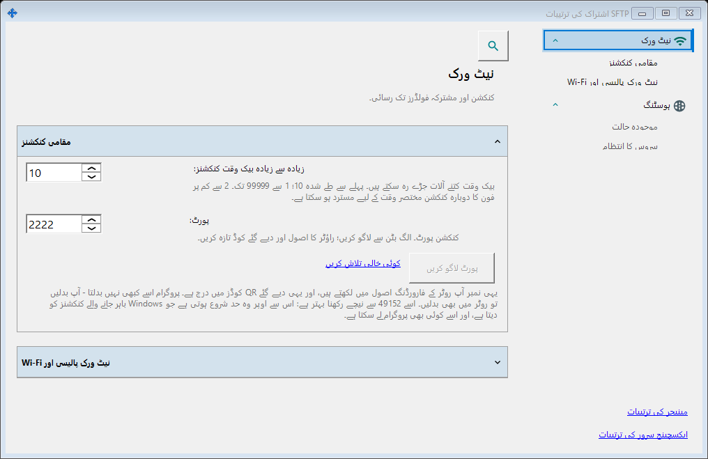
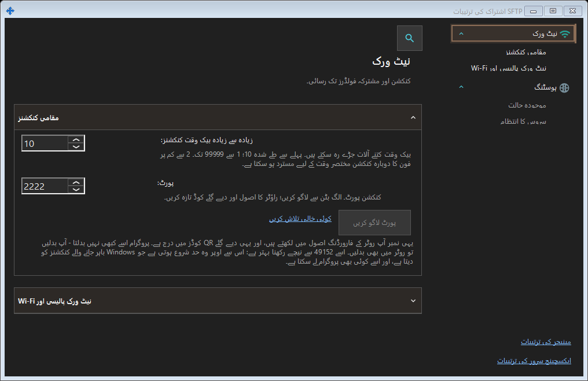

SFTP اشتراک کی ترتیبات
یہ کس مقصد کے لیے ہے
SFTP: پورٹ، کنکشن حد، مقامی نیٹ ورک اور Windows سروس۔ ایکسچینج سرور: پتہ، TLS، اکاؤنٹس، آلات، دعوتیں، سروس، لاگ اور دور دراز انتظام۔


اس ترتیب میں
SFTP پورٹ لاگو کریں سے بدلتا ہے۔ ونڈو بدلنے پر مسودہ رہتا ہے۔ بند کرتے وقت ہاں لاگو کرتا ہے، نہیں چھوڑتا ہے، منسوخ جاری رکھتا ہے۔ خرابی پر مسودہ رہتا ہے۔ پورٹ بدلنے کے بعد کوڈ اور راؤٹر قاعدہ اپ ڈیٹ کریں۔
عناصر
SFTP اشتراک کی ترتیبات
SFTP: پورٹ، کنکشن حد، مقامی نیٹ ورک اور Windows سروس۔ ایکسچینج سرور: پتہ، TLS، اکاؤنٹس، آلات، دعوتیں، سروس، لاگ اور دور دراز انتظام۔ SFTP پورٹ لاگو کریں سے بدلتا ہے۔ ونڈو بدلنے پر مسودہ رہتا ہے۔ بند کرتے وقت ہاں لاگو کرتا ہے، نہیں چھوڑتا ہے، منسوخ جاری رکھتا ہے۔ خرابی پر مسودہ رہتا ہے۔ پورٹ بدلنے کے بعد کوڈ اور راؤٹر قاعدہ اپ ڈیٹ کریں۔
SFTP اشتراک کی ترتیبات
SFTP: پورٹ، کنکشن حد، مقامی نیٹ ورک اور Windows سروس۔ ایکسچینج سرور: پتہ، TLS، اکاؤنٹس، آلات، دعوتیں، سروس، لاگ اور دور دراز انتظام۔ SFTP پورٹ لاگو کریں سے بدلتا ہے۔ ونڈو بدلنے پر مسودہ رہتا ہے۔ بند کرتے وقت ہاں لاگو کرتا ہے، نہیں چھوڑتا ہے، منسوخ جاری رکھتا ہے۔ خرابی پر مسودہ رہتا ہے۔ پورٹ بدلنے کے بعد کوڈ اور راؤٹر قاعدہ اپ ڈیٹ کریں۔
مینیجر کی ترتیبات · SFTP اشتراک کی ترتیبات · ایکسچینج سرور کی ترتیبات